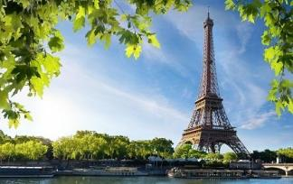

TRAVEL THE WORLD WITH YOUR VEHICLE
Discover everything about the overland travel lifestyle and building your own expedition truck here at Terratrotter®.
Do you want something different out of life? Outdoor adventures, freedom or new experiences? These are few of the things that drive people to hit the road. Elmer & Nicole - the two people behind Terratrotter® - are making this dream come true. They are building their own expedition vehicle; an off-grid, all-terrain tiny house on wheels. Traveling overland is becoming their way of life and maybe that of yours as well! Do you want to turn your dream into reality as well, then start your journey here with us.
Have fun reading and enjoy the sights...1.Rome
Why go: When you visit the Eternal City, prepare to cross a few must-see attractions – the Colosseum, the Trevi Fountain and the Pantheon, to name a few – off your bucket list. Additional treasures like St. Peter's Basilica and the Sistine Chapel can be found in nearby Vatican City
2.Sydney
Why go: This metropolis offers more than just a dizzying array of landmarks (e.g., the Sydney Opera House, Sydney Harbour and the Sydney Harbour Bridge). The Australian city boasts a warm, sunny climate ideal for enjoying local beaches like Coogee and Bondi.
3.Porto
Why go: Travel to this coastal Portuguese city for its rich history, charming architecture, abundant beaches and, of course, its claim to fame: port wine. What's more, a visit here is more cost-efficient compared to larger European destinations
4.London
Why go: London is a world unto itself. The eclectic neighborhoods – which house a blend of historic landmarks and modern-day attractions – can keep you occupied for days. Be sure to visit the Tower of London, Buckingham Palace and the British Museum during your stay
5.Paris
Why go: Year after year, the magnetic City of Light draws travelers looking to cross the Eiffel Tower and Notre Dame off their bucket lists. But what visitors really fall in love with are the city's quaint cafes, vibrant markets, trendy shopping districts and unmistakable je ne sais quoi charm.
New york city
Why go: New York City hosts infinite urban adventures: Wander through Central Park, tour the exhibits at the Met, catch a Broadway show or peruse SoHo's stylish boutiques. And at night, admire Manhattan's glittering skyscrapers from the top of the Empire State Building
Florence
Why go: The historic city of Florence offers plenty of world-famous attractions, including the Duomo, the Piazzale Michelangelo and the Piazza della Signoria. After appreciating the city's Renaissance architecture and art, sample some of the region's delectable Tuscan food and wine
Prague

Why go: Places like the Old Town Square, St. Vitus Cathedral and the Prague Astronomical Clock will make you feel like you've stepped into a fairy tale. Make sure to visit the popular Charles Bridge and touch one of the 30 saint statues for luck.
Barcelona
Why go: Though known for its fútbol team, Barcelona boasts much more than athletic talent. The city is a feast for the eyes: Visitors can walk past medieval architecture in the Barri Gòtic and Gaudi's unique creations at Güell Park. Meanwhile, Las Ramblas buzzes at all hours.
Dubai
Why go: Stunning Persian Gulf views, heart-pumping activities and historic landmarks await in Dubai. This Middle Eastern city is filled with one-of-a-kind attractions, including the Dubai Mall – one of the world's largest shopping centers – and the indoor Ski Dubai.
Amalfi coast
Why go: Few places in the world can rival the natural beauty found along the Amalfi Coast. This region along the Italian coast is home to 13 quaint towns and plenty of upscale hotels and resorts, plus lots of delectable Italian food. Plan a spring or fall visit to avoid the summer crowds
Santorini
Why go: Frequently touted as a top honeymoon destination, this Greek isle woos newlyweds every year with its breathtaking sunsets, pastel hued villages and black- and red-sand beaches. Don't forget to leave some time to visit archaeological sites, such as Ancient Thira
Honolulu - Oahu
Why go: The most-visited island in Hawaii is famous for its inviting beaches and places of cultural significance such as Pearl Harbor and 'Iolani Palace. Book a room at a beachfront hotel in Wakiki Beach to have easy access to the shore and enjoy plenty of upscale shopping and dining options nearby
NEWSLETTER
With all our projects we want to support and inspire the life and travels of many more. Be the first one to discover what we are up to by subscribing to our Monthly Newsletter.
Join Our Family!